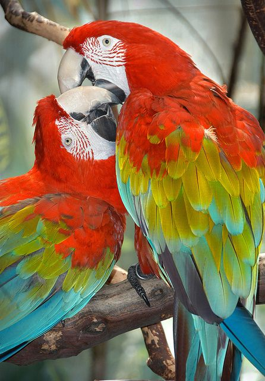

ELEPHANTS
Elephants are one of the largest living land animals. They have a long trunk and a huge head with flat ears with tusks as teeth. They communicate through trumpet calls, body language, touch, seismic signals and scent.
GRIZZLY BEARS
Grizzly bears are massive and come in different colors like very light tan to dark brown.The hump at the back is where a mass of muscles attach to the bear's backbone. This gives the bear additional strength for diging.
JAGUAR
In the cat family, Jaguars are the third largest in the world. The word jaguar is from the word 'yaguar' which means 'he who kills with one leap'.
LION
The lion is the largest mammal in the Felidae family.The fastest runners over short distances are relatively small females as they coordinate their hunting of herd animals.
TIGERS
Tigers are one of the strongest animals in the jungle. Tigers are known to be carnivorous animals as they hunt other animals for food. They have long and strong bodies with four legs and strong paws.
GIRAFFE
Giraffes are the tallest mammals on Earth with their legs about 6 feet. With these legs, they are able to run 35 miles per hour over a short distances, but 10 mph over longer distances.
GORILLAS
Gorillas have opposable thumbs and big toes just like humans. Some gorillas are able to communicate with us through sign language.
MONKEYS
There are around 260 monkey species and most of them prefer to live in trees instead of ground. Monkeys are also highly inteligent animals.
HIPPOPOTAMUS
Hippopotamus' are the third largest living mammals as they cab grow between 10.8 to 16.5 feet long. With their large teeth and tusk, Hippos can be very aggressive and dangerous.
PANDAS
Giant pandas live 18 to 20 years in the wild and 25-30 years in captivity. Pandas have 6 fingers and the 6th functions as a thumb.
POLAR BEARS
Polar bears live in the Arctic along the icy sea. They are very strong swimmers and they use their large front paws for paddling.

Parrots
Parrots have been a very favourable pet as they are amusing, inttelligent and affectionate. They are able to imitate many sounds including human speech.


.png)
.png)